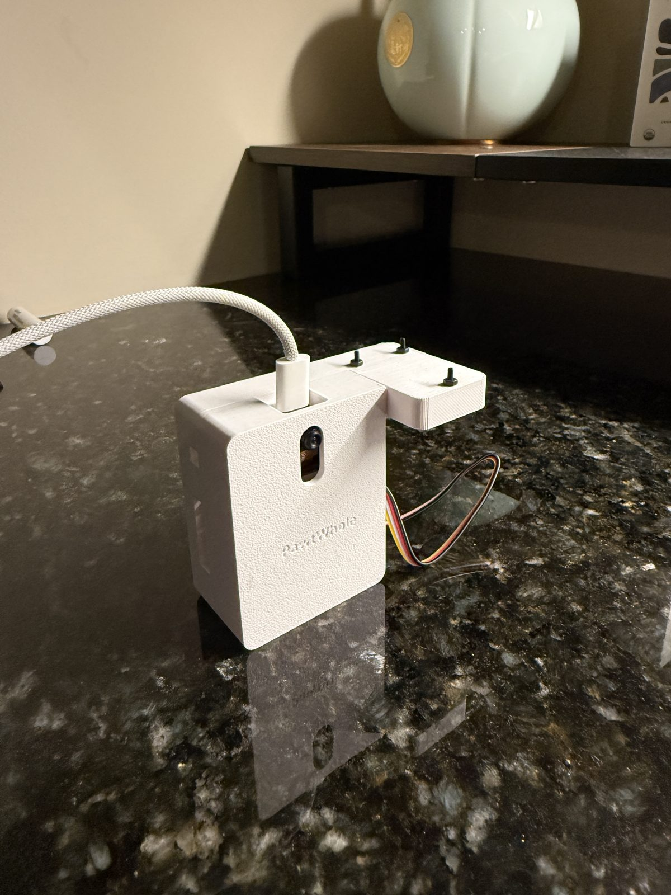

Compliant End Effector
A smart, and compliant end double finger claw with PID control algorithm.
View Details

Indentation Fatigue Testing Machine
A fatigue testing machine to evaluate strengths of different solid infill patterns
View Details
Cycloidal Pattern Drawing Machine
A cycloidal art pattern drawing machine for students with developmental disabilities
View Details
Stirling Engine
A miniature Stirling engine designed for educational purposes and efficiency testing.
View Details
Pothole Detection
A machine learning model for detecting potholes and road damage from images.
View Details